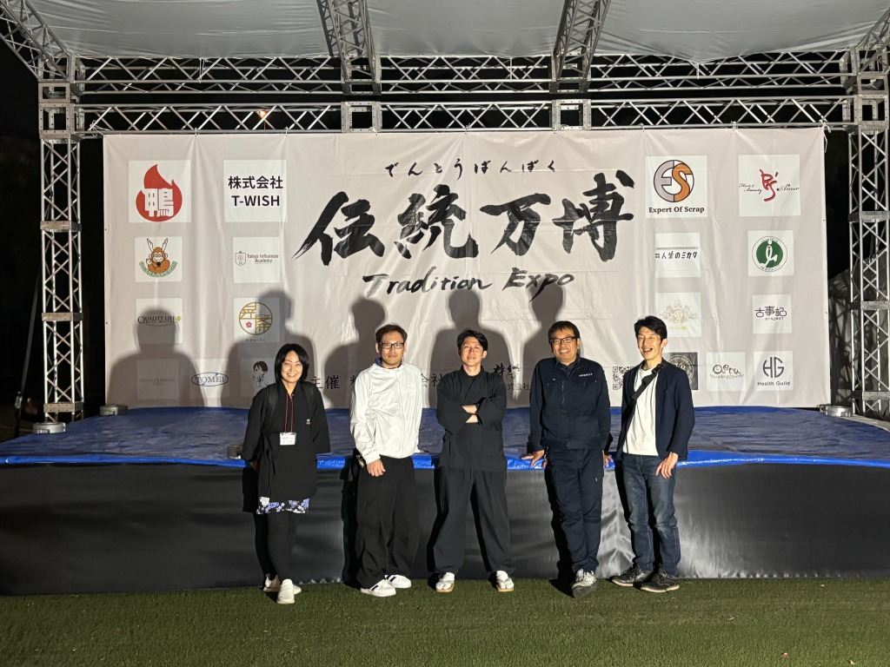
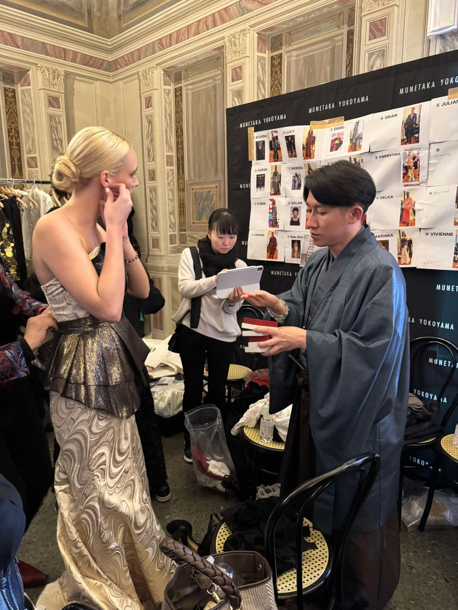
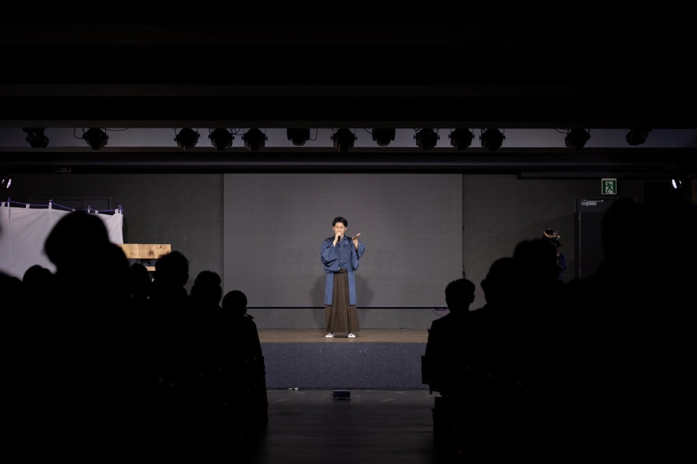

挑戦を、
ひとりで抱え込まないための
月額顧問
発信、企画、商品づくり、サービス設計、クラウドファンディング。
やりたいことはある。守りたい想いもある。
けれど、一人で考え続けていると、頭の中が散らかり、何から進めるべきか分からなくなることがあります。
この月額顧問は、月1回のZoom相談と日常のテキスト相談を通して、考えを整理し、判断を整え、前に進むための伴走サービスです。
単発で終わるアドバイスではなく、継続して状況を把握しながら、今のあなたに必要な整理と判断を支える。
本気で前に進みたい方のための、月額顧問です。
- 月1回 Zoom相談
- 日常のテキスト相談対応
- 初回6ヶ月契約
- 月額22,000円（税込）から

実践の中で、企画し、伝え、形にしてきました
伝統万博2025を開催し
クラウドファンディングで達成
初の単独講演会を開催し
集客
講演会関連クラウドファンディングで
資金調達
旧東海道を23日間で踏破
ジュエリーデザイナーとして
ミラノコレクションに出展
カンヌ国際映画祭期間中の
Villa Forbesにて発表
こんなお悩みはありませんか
やりたいことは多いのに、頭の中が整理しきれていない
発信しているが、何を軸にすれば伝わるのか分からない
商品やサービスの魅力を、どう見せればいいか悩んでいる
企画はあるのに、具体的な形に落とし込めない
一人で考えていると、判断に自信が持てなくなる
クラウドファンディングに挑戦したいが、どこから設計すべきか分からない
継続して相談できる相手がいない
想いはあるのに、事業や発信にうまく反映できていない
もし、ひとつでも当てはまるなら、この顧問サービスがお役に立てるかもしれません。
この顧問サービスについて
このサービスは、単発でアドバイスをして終わる相談サービスではありません。
月1回のZoomで現状や方向性を確認しながら、日常のテキスト相談を通して、考えの整理、企画の壁打ち、発信や導線の見直しなどを継続的に行う月額顧問サービスです。
事業を進める中では、大きな判断よりも、小さな迷いの積み重ねによって流れが変わることが少なくありません。
- 今やるべきことは何か
- 今はやらないほうがいいことは何か
- その企画は本当に今の自分に合っているのか
- 発信の方向性はずれていないか
- その見せ方で価値は伝わるのか
こうした判断を一人で抱え込まず、継続して相談できる状態をつくることが、この顧問サービスの役割です。
正解を押しつけるためのサービスではありません。
現状を整理し、優先順位を見極め、進み方を整えるための顧問です。

この顧問でできること
考えを整理する
頭の中にある構想、悩み、迷いを言語化し、何を優先するべきかを整理します。ぼんやりしていた方向性を、前に進めるための形に落とし込みます。
判断の精度を上げる
今やるべきことと、今はやらないことを切り分け、進み方を整えます。やる気や感覚だけで動くのではなく、積み上がる判断に変えていきます。
企画や発信を磨く
サービスの見せ方、導線、発信の軸、プロフィール設計、企画の方向性などについて、実践ベースで壁打ちを行います。
継続して伴走する
Zoomだけでなく、日常のテキスト相談でもつながることで、止まりそうな時や迷った時に立て直しやすくなります。
想いと事業をつなぐ
「なぜそれをやるのか」「何を大切にしているのか」という想いを、事業や発信に落とし込む整理を行います。
ご相談いただけるテーマ
ご相談内容は、発信だけ、クラウドファンディングだけに限りません。
今進めていること全体を見ながら、何を整えるべきかを一緒に考えていきます。
※本サービスは実務代行ではありません。
自分で挑戦し、形にしてきた経験があるからです
私はこれまで、日本の伝統や文化を軸に、発信、商品企画、ブランド運営、イベント開催、講演活動、クラウドファンディングなどを自ら実践してきました。
言葉だけでなく、企画を立て、見せ方を考え、人を集め、資金を集め、実際に形にする。
その流れを自分自身で何度も経験してきたからこそ、理想論ではない、現実に落とし込むための整理と方向修正ができます。
また、国内だけでなく、ミラノコレクションへの出展、カンヌでの発表、空港でのインバウンド向けイベントへの関与などを通して、「どう見せれば価値が伝わるか」「どう文脈をつくれば人が動くか」という視点も磨いてきました。
だからこそ、発信、企画、導線、クラウドファンディング、ブランドの見せ方まで、机上の理論ではなく、実践ベースで伴走できます。

プロフィール・実績

佐野 翔平 Shohei Sano
日本の伝統・文化・技術を次の世代へ残していくことを軸に、粋響株式会社および伝統屋 暁を運営。
商品企画、ブランド運営、イベント開催、講演活動、クラウドファンディング支援などを通して、理念を事業や発信として形にする活動を続けています。
主な実績
- 2025年、メイカーズ・ピアにて「伝統万博2025」を開催。クラウドファンディングで1,300万円を達成し、来場者アンケートでは8割以上が満足と回答
- 初の単独講演会を開催し、150名以上を集客。講演会関連のクラウドファンディングで1,095万円を調達
- 2021年、旧東海道530kmを23日間で踏破
- 2025年、ミラノコレクションにジュエリーデザイナーとして出展
- 2025年、カンヌ国際映画祭期間中のVilla Forbesで開催されたForbes France × ONIRIQ共催ファッションショーで日本の伝統ジュエリーを発表
- 関西・大阪万博ステージのファッションショーで作品を披露し、ダイアモンド☆ユカイ氏がブレスレットを着用
- 中部国際空港でのインバウンド向けイベントにも関わる
- 第45回全日本前装銃射撃競技選手権大会 立射部門1位
- 第42回中島流砲術射撃大会 優勝
- 朝日新聞デジタル掲載、NHK「歴史探偵」出演





お客様の声
現在は、特別価格でご案内しています
この顧問は、これまでの実績やご相談いただける内容を踏まえると、現在の料金はかなり抑えた設定です。
ただ、今は顧問サービスとしての事例蓄積や、継続的な伴走実績を積み重ねていきたい時期でもあるため、少人数限定でこの価格にしています。
そのため、現時点では「相談しやすい価格」でありながら、内容としてはかなり実践的な伴走をご提供しています。
今後、受付状況や実績の蓄積、提供体制に応じて、価格を見直す可能性があります。
もし気になっている方は、現行価格のうちにご相談ください。
プラン
スタンダード顧問
継続的に相談しながら、考えを整理し、進み方を整えたい方向けの基本プランです。
内容
- 月1回 Zoom相談（60分）
- テキスト相談対応
- 返信目安：原則48時間以内
- 初回契約6ヶ月（以後6ヶ月単位で更新）
このプランに向いている方
- 定期的に壁打ちしながら進めたい方
- 発信や企画の方向性を整理したい方
- 継続して相談できる環境を持ちたい方
伴走顧問
より密度高く相談しながら、企画、発信、導線設計などを深めて進めたい方向けの上位プランです。
内容
- 月1回 Zoom相談（60分）
- テキスト相談対応
- 返信目安：原則24時間以内
- 初回契約6ヶ月（以後6ヶ月単位で更新）
このプランに向いている方
- より手厚い伴走を求める方
- 進行中の企画やサービスを深く整理したい方
- スピード感を持って相談しながら進めたい方
【補足】どちらのプランも、実務代行は含みません。
進め方に応じて、適したプランをご案内します。
ご契約について
- 契約形態：月額顧問契約
- 初回契約期間：6ヶ月 （更新：6ヶ月単位）
- 相談方法：Zoom、テキスト連絡
- 対応時間：平日9時〜20時を基本
- お支払い方法：銀行振込 または 指定決済方法
- ご契約開始前に、サービス内容と運用ルールをご案内します
【ご確認事項】
- 本サービスは成果保証ではありません。
- 実務代行、制作代行は含まれておりません。
- 内容によっては別途個別支援をご案内する場合があります。
- 緊急対応は含まれておりません。
よくあるご質問
はい。これから事業を育てていきたい方も対象です。
発信、企画整理、商品やサービスの見せ方、導線設計、クラウドファンディング、ブランドの方向性など、事業全体の整理や壁打ちをご相談いただけます。
単発相談はその場でのアドバイスが中心です。月額顧問は継続的に状況を把握しながら進められるため、実行に結びつきやすいのが特徴です。
本顧問サービスには、実務代行は含まれておりません。
初回契約は6ヶ月です。
スタンダード顧問は原則48時間以内、伴走顧問は原則24時間以内です。
状況に応じてご相談可能です。
現在の状況に応じてご案内します。まずはお気軽にお問い合わせください。

お申し込みについて
現在、月額顧問は少人数限定で受付しています。
理由は、一人ひとりの状況を把握しながら、誠実に伴走したいと考えているからです。
また、現在は顧問実績の蓄積フェーズでもあるため、実績や提供内容に対してかなり抑えた価格でご案内しています。
今後、受付状況や提供体制に応じて価格を改定する場合があります。
ご興味のある方は、以下の内容を添えてお問い合わせください。
- お名前
- ご活動内容
- 現在のお悩み
- 相談したい内容
- ご希望プラン（未定でも可）
本気で前に進みたい方へ
やりたいことがある。
守りたい想いがある。
けれど、一人で整理しきれない。
そんな時に、継続して相談できる相手がいるだけで、進み方は大きく変わります。
発信も、企画も、商品づくりも、クラウドファンディングも、思いつきだけでは続きません。
大切なのは、進みながら整え、崩れそうな時に立て直し、少しずつでも前に進み続けることです。
月額顧問という形で、その積み重ねを支えるお手伝いができればと思っています。
本気で前に進みたい方は、ぜひご相談ください。